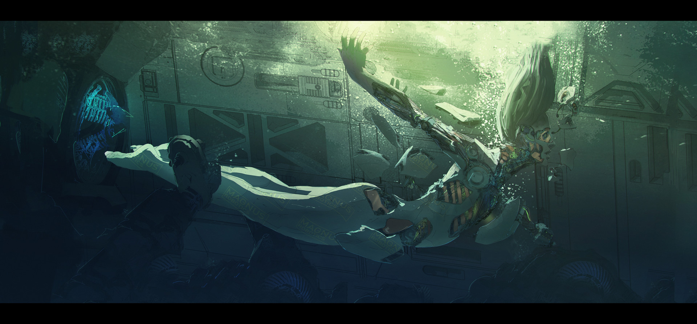
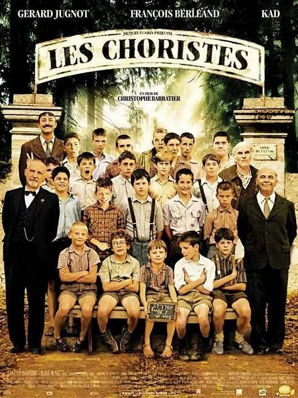
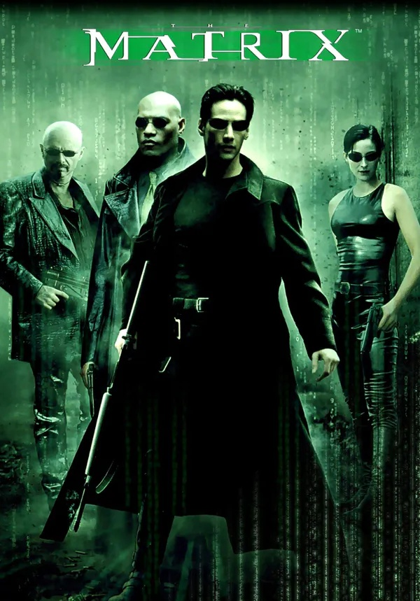

类别
点击影片海报跳转相关评分界面
科幻
动作
剧情
系列电影
人工智能

简介:21世纪中期，由于温室效应，南北极冰川融化，地球上很多城市被淹没。此时，人类科技已经高度发达，人工智能机器人就是人类发明出来用以应对恶劣自然环境的科技手段之一，而且，机器人制造技术已经高度发达，先进的机器人不但拥有可以乱真的人类外表，还能感知自身的存在。
莫妮卡的儿子马丁重病住院，生命危在旦夕，为了缓解伤痛的心情，她领养了机器人小孩大卫（海利•乔•奥斯蒙特 饰），大卫的生存使命就是爱她。马丁苏醒，恢复健康，回到了家里，一系列的事情使大卫“失宠”，最后被莫妮卡抛弃。
在躲过机器屠宰场的残酷追杀后，大卫在机器情人乔（裘德•洛 饰）的帮助下，开始寻找自己的生存价值：渴望变成真正的小孩，重新回到莫妮卡妈妈的身边。谁也不知道他能否完成自己的心愿，脱胎换骨成为真正的人，等待他们的只是凶吉难料的旅程……豆瓣
放牛班的春天

简介:1949年的法国乡村，音乐家克莱门特（热拉尔·朱尼奥 饰）到了一间外号叫“塘低”的男子寄宿学校当助理教师。学校里的学生大部分都是难缠的问题儿童，体罚在这里司空见惯，学校的校长（弗朗索瓦·贝莱昂 饰）只顾自己的前途，残暴高压。 性格沉静的克莱门特尝试用自己的方法改善这种状况，他重新创作音乐作品，组织合唱团，决定用音乐的方法来打开学生们封闭的心灵。 然而，事情并不顺利，克莱门特发现学生皮埃尔·莫安琦（让-巴蒂斯特·莫尼耶 饰）拥有非同一般的音乐天赋，但是单亲家庭长大的他，性格异常敏感孤僻，怎样释放皮埃尔的音乐才能，让克莱门特头痛不已；同时，他与皮埃尔母亲的感情也渐渐微妙起来。from 豆瓣
黑客帝国

简介:不久的将来，网络黑客尼奥（基奴李维斯 饰）对这个看似正常的现实世界产生了怀疑。他结识了黑客崔妮蒂（凯莉·安·摩丝 饰），并见到了黑客组织的首领墨菲斯（劳伦斯·菲什伯恩 饰）。墨菲斯告诉他，现实世界其实是由一个名叫“母体”的计算机人工智能系统控制，人们就像他们饲养的动物，没有自由和思想，而尼奥就是能够拯救人类的救世主。 可是，救赎之路从来都不会一帆风顺，到底哪里才是真实的世界？如何才能打败那些超人一样的特勤？尼奥是不是人类的希望？这是黑客的帝国，程序和代码欢迎大家的到来。.豆瓣